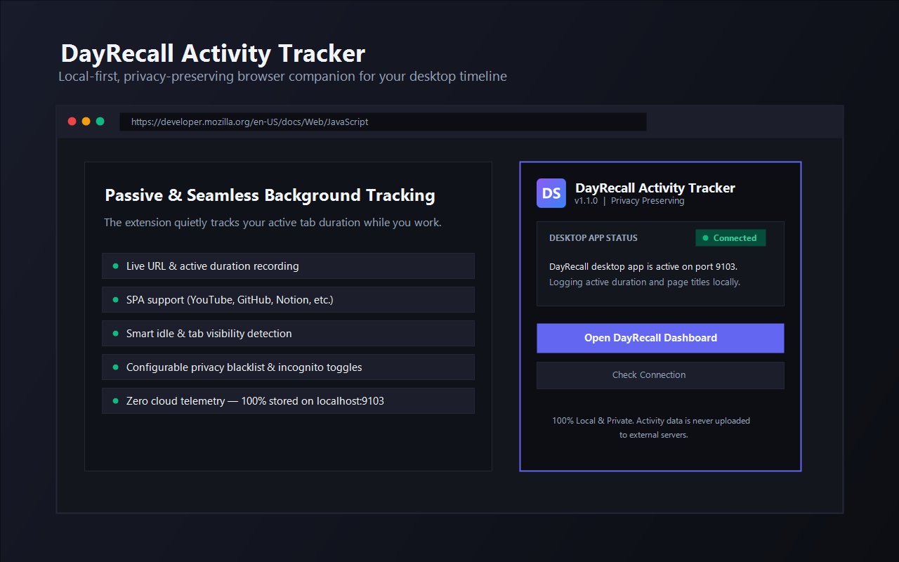

01 / remember
Stop relying on a perfect memory.
Revisit what you were doing, what you read, and where your time went, whenever you need the context.
DayRecall quietly captures the work you do, the pages you read, and the time you spend. Then it helps you make sense of it, without sending your life to the cloud.

DayRecall runs quietly in the background, turning scattered activity into something you can return to.
Between windows, tabs, documents, and articles, the useful thread of a day is easy to lose. DayRecall keeps the thread.
Revisit what you were doing, what you read, and where your time went, whenever you need the context.
Daily digests, project analytics, search, and chat turn raw activity into a clearer picture of your work.
Useful on an ordinary Tuesday, valuable when a detail from three weeks ago suddenly matters.
Turn your day's activity into a concise summary of apps, domains, projects, and article takeaways.
Ask natural-language questions about your tracked history with AI grounded in your own data.
Replay a day as contiguous frames and remember what you were doing at a specific time.
Search activity, browser history, articles, bookmarks, and more from one place.
See how your time moves across applications, domains, and projects over time.
Export to CSV, JSON, Markdown, or PDF, and keep timestamped local SQLite backups.
Most productivity tools begin with a cloud account. DayRecall begins on your Windows machine. It stores activity locally and lets you choose how AI fits into your setup.
Activity is stored in a local SQLite database on your machine.
Use Ollama for local AI, or configure OpenAI when that tradeoff works for you.
Inspect the source, export your records, and keep your own backups.
Runs from the system tray and starts with Windows when you choose.
No account maze. No productivity ritual. Install it, work normally, and come back when you need the memory.
Download the standalone Windows app. No .NET runtime or SDK is needed.
It records active windows quietly. Add the Chrome extension for URLs, tabs, and page time.
AI turns your activity into digests, article summaries, and answers about your day.
Search, replay your timeline, inspect analytics, or export the record you built.
Your personal context is more useful when it is queryable. DayRecall's chat works from the activity it has tracked for you.
When a thought, decision, or useful page is just out of reach, move through the day instead of guessing.
DayRecall is open source. Explore the Windows app, the local data architecture, and the browser extension on GitHub.
A private, local-first memory for the work you already do.
Install the DayRecall Chrome extension to capture active URLs, tab titles, page time, and single-page app navigation. It connects to your local desktop app for richer browser analysis. The desktop app still tracks active windows without it.
DayRecall turns the same local record into different kinds of help, depending on what you need to remember.
Dashboard stats, activity logs, usage reports, and timeline playback show what happened and when.
Focus sessions, deep work, context switching, projects, goals, and trends help you review how time moved.
Save bookmarks, infer documents, summarize articles, and build searchable learning memories from what you read.
Ask about your day, generate weekly or monthly reviews, and export the record when you need it elsewhere.
DayRecall is built for sensitive context. It records useful metadata about your work without pretending that “productivity” is an objective measurement.
Foreground apps, window titles, executable paths, browser URLs, tab titles, domains, and time spent.
It does not continuously capture screenshots, keystrokes, or full page contents.
Pause tracking, clear date ranges, configure browser privacy rules, export your data, or restore a local backup.
Focus and productivity insights are helpful heuristics, not a verdict on how you worked.
The app is intentionally close to the machine. That keeps your records private, and makes the setup a little different from a cloud SaaS tool.
DayRecall runs on Windows 10/11 as a tray-friendly desktop application.
Install the optional extension when you want detailed URLs, tabs, and page-time analysis.
Install Ollama and the supported model for local digests, chat, summaries, and embeddings.
You can configure OpenAI as a fallback, but relevant prompts and context then leave your machine.
DayRecall can start with Windows, live in the system tray, and keep tracking while you work. It is there when a memory is useful, not another tab demanding attention.